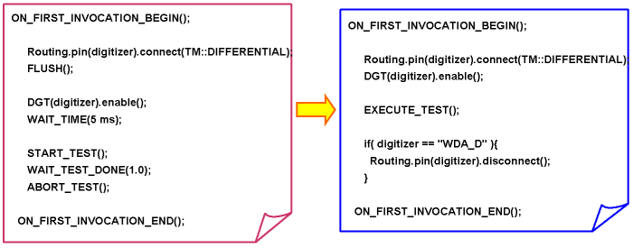
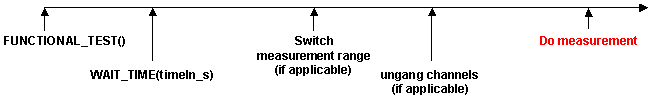
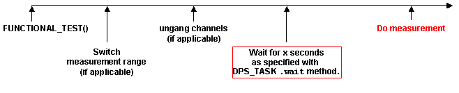

Reduce Wait time
Reducing settling (wait) times to a minimum can save test time.
About this task
The following gives you a simple test method API to determine how short your wait time can be.
Procedures
- This procedure can be used to check to see whether settling time is relevant, or to reduce it to a minimum.
- The idea is to find the minimum time for stable and repetitive results.
- The figure below shows how to check and reduce the settling time accordingly so long as your
results are stable and repetitive.

Explanations:
- WAIT_TIME(x); //where x is a delay
- Reduce WAIT_TIME as long as results are stable and repetitive
- The above WAIT_TIME of 5 ms has been chosen empirically
Using the "wait" Settling Time Within a DPS_TASK
It is possible to set a custom wait/settling-time within a DPS_TASK by using wait instead of the WAIT_TIME test method API
The wait test method API feature offers the possibility of adding wait time directly before the measurement is performed.
This helps to stabilize the measurements and allows you to reduce the wait time to a minimum.
This is, for example, especially useful after any necessary range-switching or un-ganging of channels is performed, especially where large capacitances are present.
Example
1) The conventional method before release 6.3.3 was as follows:
ON_FIRST_INVOCATION_BEGIN();
mydpsTask.pin("dpsPin").min(0).max(1 mA);
mydpsTask.samples(512).execMode(TM::PVAL);
FUNCTIONAL_TEST(); //to set the device into the right test mode
WAIT_TIME(5 ms);
mydpsTask.execute();
ON_FIRST_INVOCATION_END();
cout << mydpsTask.getValue("dpsPin");The result of this is as follows:

2) The recommended method for release 6.3.3 and subsequent releases using "wait" in a DPS task API is as follows:
ON_FIRST_INVOCATION_BEGIN();
mydpsTask.pin("dpsPin").min(0).max(1 mA);
mydpsTask.samples(512).execMode(TM::PVAL);
mydpsTask.wait(5 ms);
FUNCTIONAL_TEST(); //to set the device into the right test mode
mydpsTask.execute();
ON_FIRST_INVOCATION_END();
cout << mydpsTask.getValue("dpsPin");The result of this is as follows:

Here, you see that the wait time is applied directly before the measurement which is preferable, especially if you have done any range-switching or un-ganging of channels.